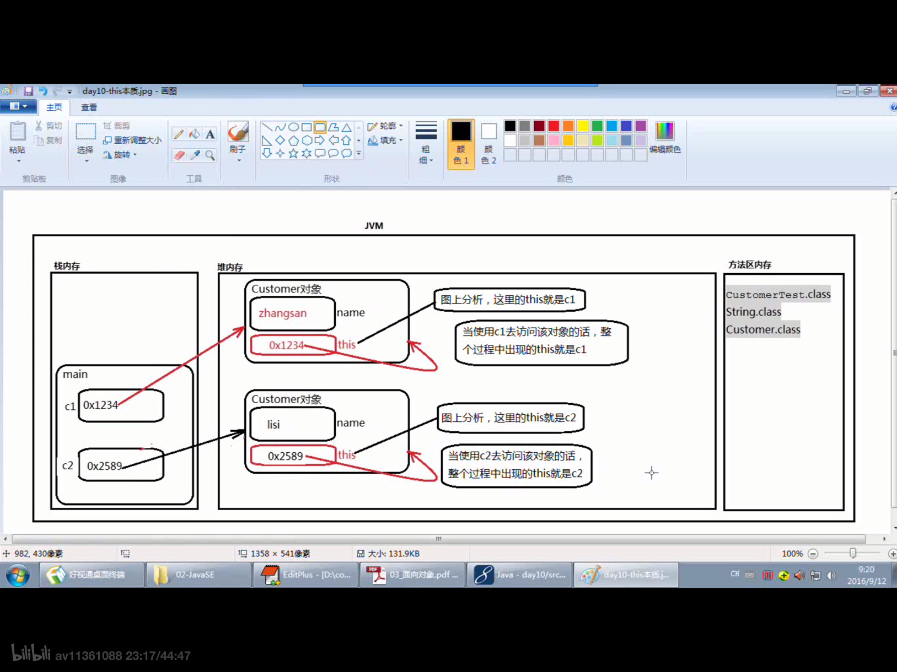

原文连接:https://www.cnblogs.com/ruigege0000/p/11675115.html
一、对象和引用
1.对象：目前在使用new运算符在堆内存中开辟的内存空间成为对象。
2.引用：是一个变量，不一定是局部变量，好可能是成员变量，引用保存了内存地址，指向了堆内存中对象。所有访问实例的相关数据，都需要通过“引用.”的方式访问，因为只有通过引用才能找到对象。只有一个空的引用，访问对象的实例相关的数据会出现空指针异常。
3.参数的传递
主要研究和学习的是方法在调用的时候，涉及到参数传递的问题，到底是怎么传递数据的呢？
方法调用的时候，涉及到参数传递的问题，传递的时候，java只遵循一种语法机制，就是将变量中保存的“值”传递过去了，只不过有的时候这个值是一个基本数据类型的字面值，有的时候是另一个java对象的内存地址0x1234
二、this关键字
1.this是一个关键字，翻译为“这个”
2.this是一个引用，this是一个变量，this变量中保存了内存地址指向了自身，this存储在JVM堆内存java对象内部。
3.创建任何一个对象，每一个对象都有this。
package com.bjpowernode.java_learning;
public class D40_ {
public static void main(String[] args) {
Customer c1 = new Customer();
c1.name = "zhangsan";
Customer c2 = new Customer();
c2.name = ""
}
public class Customer {
String name;
}
}

4.没有static关键字的方法被称为“实例方法”
5.没有static关键字的变量被称为“实例方法”
6.注意：当一个行为/动作执行的过程中，是需要对象参与的，那么这个方法一定要定义为“实例方法”，不要带static关键字，
例子：
以下方法定义为实例方法，是因为每一个顾客在真正的购物的时候，最终的结果是不同的。所以这个动作在完成的时候必须有对象的参与。
package com.bjpowernode.java_learning;
public class Customer{
String name;
// 当张三在购物的时候，输出”张三在购物“
// 当李四购物的时候，输出”李四在购物“
public shopping() {
System.out.println(this.mame + "在购物");//对象是有名字的，这里的this就是代表对象名
}
}
package com.bjpowernode.java_learning;
public class D40_this_keyword {
public static void main(String[] args) {
Customer c1 = new Customer();
c1.name = "zhangsan";
Customer c2 = new Customer();
c2.name = "lisi";
c1.shopping();
c2.shopping();
}
}
7.this可以出现在”实例方法”当中，this指向当前正在执行这个动作的对象。
三、源码：
D40_this_keyword
Customer.java
地址：
https://github.com/ruigege66/Java/blob/master/D40_this_keyword
https://github.com/ruigege66/Java/blob/master/Customer.java
2.CSDN：https://blog.csdn.net/weixin_44630050（心悦君兮君不知-睿）
3.博客园：https://www.cnblogs.com/ruigege0000/
4.欢迎关注微信公众号：傅里叶变换，个人公众号，仅用于学习交流，后台回复”礼包“，获取大数据学习资料